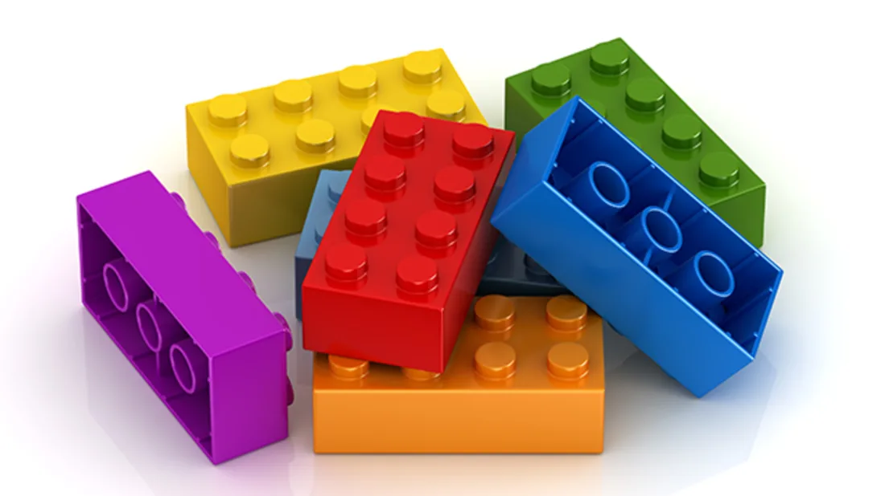

Componentes

Componentes React são como funções JavaScript. Eles aceitam entradas como propriedades (chamadas “props”) e retornam novos elementos React (JSX).
Os componentes permitem que a UI seja dividida em partes independentes e reutilizáveis, ou seja, trata cada parte da aplicação como um bloco isolado, livre de outras dependências externas.
Class Component e Function Component
A maneira mais simples de definir um componente é escrever uma função JavaScript:
function Welcome(props) {
return <h1>Olá, {props.name}</h1>;
};
Este mesmo exemplo pode ser escrito em forma de Classe ES6:
class Wellcome extends React.Component {
render() {
return <h1>Olá, {this.props.name}</h1>;
}
}
Para o React, estes dois componentes são equivalentes.
Antes da versão 16.8 do react utillizava-se classes para componentes que precisavem guardar seu estado (stateful) e funções para componente que não utiliza estado (stateless)
A partir da versão 16.8, com a vinda dos Hooks, esta separação não é mais necessária, ou seja, conseguimos criar componentes statful e stataless tanto com classe quanto com funções. Hoje em dia, a recomendação é que se utilize Function Components ao invés de Class Components.
Renderizando um Componente
O exemplo assim pode ser renderizado da seguinte maneira:
function Welcome(props) {
return <h1>Olá, {props.name}!</h1>;
}
const element = <Welcome name="Carla" />;
ReactDOM.render(element, document.getElementById('root'));
Saída: Olá, Carla!
Atenção Sempre inicie os nomes dos componentes com letra maiúscula.
No React, componente que começam com letra minúscula são tags do DOM. O
<div />representa a tag div do HTML, porém o<Welcome />representa o componente Welcome que acabamos de criar.
Passando informações para um componente
A maneira de passar informações para um componente é através de suas propriedades (props).
Props são somente leitura
Um componente nunca deve modificar seus próprios props
Compondo Componentes
A composição é a base da reutilização de componentes de UI. O React permite compor facilmente os componentes React existentes, juntamente com elementos HTML nativos, para desenvolver componentes mais complexos.
const Welcome = (props) => <h1>Olá, {props.name}</h1>;
function App() {
return (
<div>
<Welcome name="Carla" />
<Welcome name="Julia" />
<Welcome name="Amanda" />
</div>
);
}
ReactDOM.render(<App />, document.getElementById('root'));
Extraindo Componentes
Uma boa prática que devemos adotar no React é a de construir componentes pequenos.
Para exemplificar vamos pegar o componente Comment, abaixo, que descreve um comentário em uma rede social.
Ele tem como entrada (props):
- author (objeto)
- text (string)
- date (data)
function Comment(props) {
return (
<div className="Comment">
<div className="UserInfo">
<img className="Avatar"
src={props.author.avatarUrl}
alt={props.author.name}
/>
<div className="UserInfo-name">
{props.author.name}
</div>
</div>
<div className="Comment-text">
{props.text}
</div>
<div className="Comment-date">
{formatDate(props.date)}
</div>
</div>
);
}
Podemos ver que este é um componente complicado de alterar, por conta de todo o aninhamento. Também é difícil reutilizar suas partes individuais.
- Extraindo o Avatar
function Avatar(props) {
return (
<img className="Avatar"
src={props.user.avatarUrl}
alt={props.user.name}
/>
)
}
function Comment(props) {
return (
<div className="Comment">
<div className="UserInfo">
<Avatar user={props.author} />
<div className="UserInfo-name">
{props.author.name}
</div>
</div>
<div className="Comment-text">
{props.text}
</div>
<div className="Comment-date">
{formatDate(props.date)}
</div>
</div>
);
}
- Vamos extrair o UserInfo
function Avatar(props) {
return (
<img className="Avatar"
src={props.user.avatarUrl}
alt={props.user.name}
/>
)
}
function UserInfo(props) {
return (
<div className="UserInfo">
<Avatar user={props.user} />
<div className="UserInfo-name">
{props.user.name}
</div>
</div>
)
}
function Comment(props) {
return (
<div className="Comment">
<UserInfo user={props.author}>
<div className="Comment-text">
{props.text}
</div>
<div className="Comment-date">
{formatDate(props.date)}
</div>
</div>
);
}
Com isso o componente fica com uma leitura mais simples, reutilizavel e com uma melhor manutenabilidade.
Componentes Puros
O React.PureComponent é similar ao React.Component, porém ele faz um tratamento diferente no momento da renderização do componente. No momento da renderização, o PureComponent faz uma chamada ao método shouldComponentUpdate() que compara os objetos (props e states) de forma superficial e só renderiza se houver alguma alteração.
Atenção
O método shouldComponentUpdate() do React.PureComponent compara os objetos apenas superficialmente. Se eles contiverem estruturas de dados complexas, isto pode causar falso-negativos para diferenças mais profundas. Estenda PureComponent quando você espera possuir props e state simples
Além disso, o método shouldComponentUpdate() do React.PureComponent pula atualizações de prop para toda a subárvore do componente. Esteja certo de que todos seus componentes que descendem dele também são “puros”.
React.Memo
Como vimos na seção anterior, o PureComponent é uma extensão de classe que tem o comportamento de verificar se houve mudança no State ou Props e só atualiza o quando é identificada a alteração.
Porém como este comportamento é controlado quando utilizamos Function Componente?
A resposta para esta pergunta é o React.Memo!
O React.Memo é um super componente que verifica se houve alteração nas Props antes de fazer a atulização do componente renderizado.